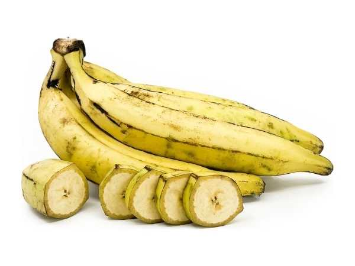

Musa × paradisiaca
Common Names: Nendran Banana, Kerala Banana, Nendrapazham, Plantain Banana
Local Name: Nendran Vazhai (Tamil/Malayalam), Nendrapazham (Malayalam)
Family: Musaceae
Origin: South India (Kerala); AAB genome group
Plant Type: Perennial herbaceous monocot; pseudostem-forming plant
Variety: Nendran — large, starchy banana; used ripe and unripe; GI-tagged product of Kerala; AAB genome
Average Lifespan: Perennial; ratoon system for 5–10+ years
| Growth Habit | Tall herbaceous perennial with robust pseudostem; clump-forming |
| Plant Size | 4–6 meters tall; one of the tallest banana varieties |
| Leaves | Very large, oblong; 2.5–3 meters long; bright green; robust midrib |
| Flowers | Large purple-red inflorescence; female flowers develop into large fruits; parthenocarpic |
| Flower Characteristics | Parthenocarpic; no pollination needed; large banana heart used as vegetable |
| Fruit | Large, thick-skinned; 20–30 cm long; starchy when unripe; sweet when fully ripe; 5–7 per hand |
| Fruit Color | Green turning yellow when ripe; creamy white to pale yellow flesh |
| Seed Characteristics | Seedless (parthenocarpic) |
| Root System | Shallow, fibrous root system; rhizome produces suckers |
| Climate | Tropical; warm, humid conditions; coastal and humid inland areas preferred |
| Temperature Range | 22–35°C; frost-sensitive; needs warm, humid conditions |
| Rainfall Requirement | 1500–3000 mm; high moisture requirement; irrigation essential in dry areas |
| Soil Type | Deep, well-drained fertile loam; laterite soils of Kerala are ideal |
| Soil pH Preference | 6.0–7.5 |
| Sun Requirement | Full sun (6+ hours) |
| Spacing | 3–4 meters between plants; tall variety needs more space |
| Irrigation Method | Drip or basin irrigation; regular watering essential |
| Water Requirement | Very high; one of the most water-demanding banana varieties |
| Can it Grow in Pots? | Not recommended; very tall variety requires open ground |
| Fertilizer Schedule | Monthly; high potassium and nitrogen; 3 major applications |
| Recommended Organic Fertilizers | FYM, vermicompost, neem cake, wood ash, green manure |
| Pesticide Frequency | Monthly preventive; treat immediately if pests appear |
| Recommended Organic Pesticides | Neem oil for aphids; Trichoderma for Fusarium wilt; pseudostem injection for weevil |
| Mulching Practice | Heavy organic mulch to retain moisture |
| Training System | Desuckering — keep 1 mother plant + 1 follower sucker; stake tall plants against wind |
| Pruning Time | Remove dry leaves regularly; cut pseudostem after harvest |
| How to Prune | Cut pseudostem at ground level after harvest; remove dry leaves; desuck regularly |
| Common Pests | Banana weevil, thrips, aphids, nematodes |
| Common Diseases | Panama wilt (Fusarium), Sigatoka leaf spot, bunchy top virus |
| Disease Prevention & Remedies | Use disease-free suckers; Trichoderma for Fusarium; copper fungicide for Sigatoka |
| Flowering Months | 12–15 months after planting; year-round in tropics |
| Fruiting Season | Year-round; 4–5 months after flowering |
| Days to Harvest | 120–150 days from flowering to harvest |
| Harvest Indicators | Fruit angles fill out; skin turns light green; harvest before fully ripe for transport |
| Average Yield per Plant | 20–35 kg per bunch; 8–12 hands per bunch |
| Pollination Type | Parthenocarpic (no pollination needed) |
| Pollination Notes | Seedless; develops without pollination |
| Pollination Details | Parthenocarpic; no pollination needed |
| Propagation by Seeds | Not applicable; seedless variety |
| Propagation by Cuttings | Sword suckers from rhizome; preferred method |
| Propagation by Grafting | Tissue culture plantlets available for disease-free planting |
| Water Usage | Very high; drip irrigation essential for water conservation |
| Soil Conservation Practices | Dense planting reduces erosion; leaf litter improves soil organic matter |
| Organic Practices Used | Vermicompost, green manure, mulching with banana leaves |
| Companion Plants | Ginger, turmeric, taro, yam as understory crops |
| Biodiversity Benefits | Banana heart attracts birds and bats; supports orchard biodiversity |
| Commercial Production Regions | India (Kerala, Tamil Nadu); GI-tagged product of Kerala |
| Market Uses | Fresh fruit, banana chips (Kerala's famous chips), temple offerings, cooking banana |
| Processing Uses | Banana chips, halwa, payasam, dried banana, banana flour |
| Market Value (Approx.) | ₹30–60 per kg; suckers ₹30–60 each |
| Symbolism | Integral to Kerala culture; used in Onam celebrations; essential in Hindu rituals and temple offerings |
| Traditional Uses | Unripe banana used as vegetable; ripe banana for desserts; banana flower as vegetable; leaves as plates |
| Calories | 122 kcal per 100g (higher starch content than dessert bananas) |
| Dietary Fiber | 2.3 g per 100g |
| Vitamin C | 18.4 mg per 100g |
| Potassium | 499 mg per 100g |
| Antioxidants | Dopamine, catechins, flavonoids; resistant starch acts as prebiotic |
| Other Key Nutrients | Vitamin B6, magnesium, folate, manganese, iron |
| Digestive Health | High resistant starch supports gut microbiome; unripe banana for diarrhea and ulcers |
| Heart Health | High potassium supports cardiovascular health |
Disclaimer: Information provided is for educational purposes only and not a substitute for medical advice.
Add your field observations here.